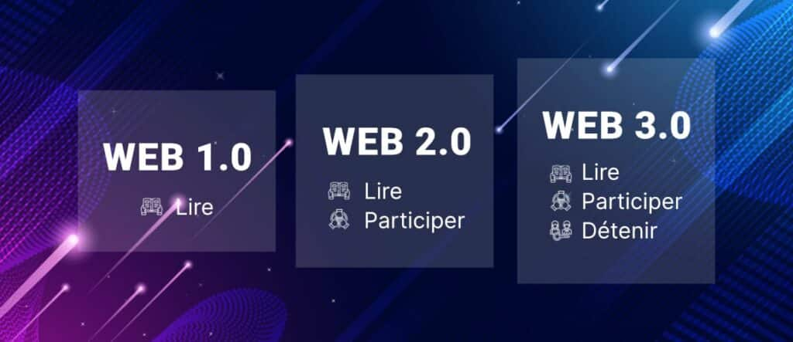

Evolution du Web
La création du Web
À la fin des années 60, l'armée américaine a développé un réseau de communication nommé ARPANET. On peut le considérer comme un précurseur du Web puisqu'il travaillait sur la commutation de paquets et constituait la première implémentation de la suite de protocoles TCP/IP. Ces deux technologies forment la base de l'infrastructure sur laquelle est construit Internet
En 1980, Tim Berners-Lee a écrit un programme nommé ENQUIRE, basé sur le concept de liens entre différents points. En 1989, Tim Berners-Lee a écrit Information Management: A Proposal et HyperText at CERN; Ces deux ouvrages fournissent tout le contexte du fonctionnement du Web. Ils ont bénéficié d'une renommée forte, suffisante pour convaincre ses patrons de le laisser aller de l'avant et de créer un système hypertexte global.
À la fin des années 90, Tim Berners-Lee a créé tout le nécessaire pour faire fonctionner une première version du web — HTTP, HTML, le premier navigateur, qui s'appelait WorldWideWeb, un serveur HTTP et quelques pages web à lire.
Les années suivantes ont vu l'explosion du web, avec la sortie de nombreux navigateurs, la mise en place de milliers de serveurs web et la création de millions de pages web.
 Crédits: CERN | Tim Berners-Lee
Crédits: CERN | Tim Berners-Lee
Les différentes version du Web

Crédits: Thomas Prévot | Youdemus | Evolution du Web et ses 3 phases
Le Web 1
La première version du Web est aujourd'hui appelée le Web1 et il est courant de considérer que son règne s'est étendu de 1993 jusqu'au début des années 2000. La caractéristique du Web1 est qu’il s’agit de pages statiques. Les internautes sont pour l'essentiel des consommateurs d'information, ils lisent le contenu des pages et découvrent la magie de l'hypertexte : on clique sur un lien et on est envoyé vers une page d'un autre site. Globalement, ce Web originel a pour but essentiel d'aider tout un chacun à trouver plus aisément de l'information. Les serveurs se contentent d'envoyer des pages aux utilisateurs.
Les internautes sont avant tout des lecteurs et les pages ne leur demandent habituellement pas de fournir du contenu complémentaire à ce qui leur est proposé. Il est à noter que dans cette époque pionnière, la publicité est absente du Web, et les tentatives de monétiser le Web sont même perçues de façon négative. L'application phare du Web1 est le navigateur qui permet d'accéder aux pages et d'utiliser les liens hypertextes. Comme Google propose l'algorithme le plus performant pour analyser ces pages, elle va peu à peu devenir l'entreprise dominante de cette première phase.
Le Web 2.0
C'est une Web designer, Darcy DiNucci, qui a inventé le terme Web 2.0 en 1999. Le terme lui-même est devenu célèbre à l'occasion de la 1re conférence sur le Web 2.0 en octobre 2004, organisée par Tim O'Reilly, John Battelle et Dale Dougherty. Le point clé de ce nouveau Web est que l'utilisateur devient un fournisseur de contenus et non plus seulement un lecteur/spectateur. Le Web 2.0 est parfois appelé « Web social participatif ». Les outils mis à la portée des utilisateurs leur permettent d'interagir avec les sites Web et de créer du contenu ou d'y contribuer. Ce contenu n'est plus statique, mais dynamique.
- L'encyclopédie Wikipédia est nourrie par ses utilisateurs qui écrivent des articles, lesquels peuvent être amendés/complétés par d'autres utilisateurs.
- Des sites de vidéo comme Youtube ou Dailymotion accueillent des vidéos postées par les internautes eux-mêmes.
- Les blogs sont créés par toutes sortes de chroniqueurs estimant qu'ils ont des choses à dire sur un sujet. Leurs textes peuvent faire l'objet de commentaires/-réponses de la part de leurs lecteurs.
- Les réseaux sociaux tels que MySpace ou Facebook présentent des informations mises en ligne par leurs usagers. Chacun peut créer son propre contenu et mobiliser son propre réseau. Ceux qui consultent ce contenu peuvent y contribuer en indiquant leur sentiment (un clic sur le bouton « J'aime »), ou une note d'appréciation/un vote. Des communautés se forment et elles évoluent selon leur propre agenda.
En parallèle à l'essor de ce Web 2.0, l'arrivée de l'Internet mobile facilite cette interaction des usagers avec les sites.
Le Web 3.0
Le terme Web 3.0 (Web3) a été inventé en 2014 par Gavin Wood, cofondateur d'Ethereum et promoteur de la cryptomonnaie Polkadot. À la base de ce nouveau modèle se trouvent un élément : la blockchain, un type de registre décentralisé inauguré par les cryptomonnaies, mais utilisable dans d'autres formes d'applications.
À l'origine du Web3, il y a un constat : le Web1 comme le Web 2.0 reposent sur une même architecture centralisée : celle des serveurs des géants de la Silicon Valley, Google, Amazon, Facebook, Apple et Microsoft soit les GAFAM, qui gèrent les données de leurs utilisateurs. Ces sociétés ont ainsi reproduit dans le monde d'Internet le modèle classique de l'informatique. Il en résulte diverses situations que l'on peut juger non optimales. Les géants du Web stockent des myriades d'informations sur leurs usagers, afin de pouvoir les monétiser. La compétition est étouffée car plus un opérateur accumule de la richesse et plus il peut rendre difficile l'émergence de nouveaux concurrents.
Gavin Wood et les autres promoteurs du Web3 soutiennent la vision d'une nouvelle architecture décentralisée avec des échanges d'utilisateur à utilisateur stockés sur une série de blockchains. En d'autres termes, avec le Web 3.0, c'est le réseau des ordinateurs connectés entre eux qui devient le serveur.
Techniquement, le Web 3.0 se caractérise par trois critères :
- Il repose sur des smart contract, soit du code en « Open Source » susceptible d'être amélioré par tout un chacun sans avoir à payer des flux de royalties à des entreprises comme Microsoft.
- C'est le réseau lui-même qui garantit l'intégrité des communications, lesquelles sont stockées sur une blockchain partagée et consultable par tous.
- Tous les utilisateurs peuvent bénéficier des applications du réseau sans obtenir l'autorisation d'une organisation centrale qui contrôle les services.
Dans son mode optimal, le Web 3.0 repose sur un Web sémantique qui suppose d'amener les ordinateurs à décoder le langage humain et à tenter de le comprendre. L'intelligence artificielle intégrée en parallèle à la structure décentralisée permet d'accumuler une mine de données et d'alimenter ainsi l'apprentissage des machines. Le Web 3.0 suppose également des graphismes en 3 dimensions comme dans les projets actuels de métavers ou dans un grand nombre de jeux vidéo. Enfin, il est accessible par toutes sortes d'appareils connectés, ce qui inclut l'IoT - Internet des Objets.
Si certains éléments du Web 3.0 sont d'ores et déjà disponibles, d'autres sont encore en cours de développement. Ainsi, la reconnaissance de la parole doit encore accomplir de grands progrès avant d'être considérée comme fiable. Une part d'utopie semble reposer sur ce Web 3.0 et elle n'est pas sans rappeler les débuts d'Internet où certains voulaient croire que le Web était voué à être gratuit ou encore qu'il allait aider à un rapprochement des peuples.